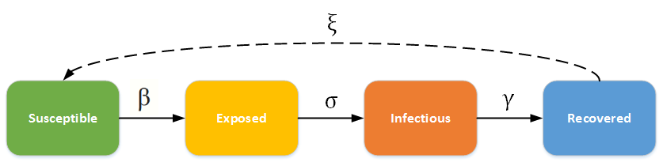
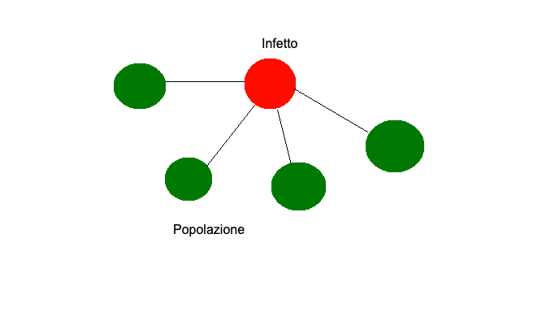

Il modello SEIR viene utilizzato per gli studi di epidemiologia, tale modello è uno dei più avanzati e utilizzati nello studio di casi epidemiologici.
Il diagramma SEIR in basso mostra come gli individui si muovono attraverso ogni compartimento del modello.
La linea tratteggiata mostra come nel modello SEIR le persone guarite possono diventare nuovamente sensibili (la guarigione non conferisce immunità per tutta la vita).

Il numero di riproduzione di base, conosciuto come R0, indica in epidemiologia, la potenziale trasmissibilità di una malattia infettiva.
Più precisamente esso rappresenta il numero di nuovi casi generati, da un singolo caso durante il proprio periodo infettivo,
esprime quindi il numero atteso di nuove infezioni originatesi da un singolo individuo nel corso del suo intero periodo di infettività, in una popolazione interamente suscettibile.

Creator:
Groppelli Pietro
Bellani Andrea Maria
Spinelli Gabriele
Calestani Nicolas
Copyright© 2020 | ADC19